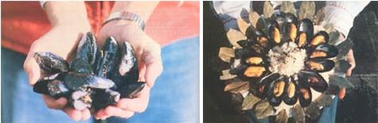

LEFT: Just-harvested mussels are a treat to the eyes of an in-the-know seafood lover. The sharp-shelled mollusks ? which are the most plentiful shellfish along North American coastlines ? are often neglected in favor of more exotic (and less nutritious) bounty from the deep. A skillful-forager ? armed with a sharpened tire iron or heavy-bladed knife and a gunnysack ? can soon pack home a passel of the plump beauties (they taste best when they're two to three inches long) if he or she begins mussels hunting at low tide. Any beachcomber, however, would be well advised to check with the local health department or fisheries authorities before gathering the delectable edibles . . . since industrial or residential pollution may have affected mussel beds. If you're truly enamored of the tasty mollusk, you'll be pleased to learn that new methods have been developed and refined which allow you to raise the shellfish. . . and ? if you'd like ? even market your surplus to local seafood outlets or restaurants. RIGHT: Mmmm-mmmmm ... steamed mussels ? fresh from the sea ? served on the half shell with rice: just one savory, easy-to-prepare dishes you can whip up in a flash with the marvelous morsels.